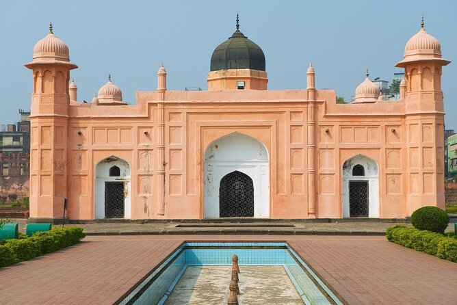

Lalbagh Fort is one of the key tourist attractions of Dhaka City in Bangladesh. This is an unfinished
Mughal fort from the 17th century, the construction of which was started by a Mughal prince who was
the governor of Dhaka at that time. But when he left, the construction was not finished by the next
governor in charge because of a family tragedy. Nevertheless, the fort's massive size and the
structures inside bring many local tourists to the fort every day.
Located in the Lalbagh area in Old Dhaka and hence achieving its name, it is the most popular and
renowned fort and a great art signature by the Mughal Empire in Bangladesh. It is also known as Fort
Aurangabad. It is situated by the bank of the river Buriganga in rich red soil. For anyone visiting
Bangladesh, Lalbagh Fort is one of the must- visiting attractions.
Lalbagh Fort Location
The fort is located in Dhaka beside the river Buriganga, which flows a little further in the present days.
The co-ordinate of Lalbagh Fort is 23.7189, 90.3882. You can view the location of Lalbagh Fort on a map
Lalbagh Fort visiting hours
| Day :- | Time :- | Winter :- | During Ramadan :- |
|---|---|---|---|
| Friday | 10:00 AM to 12:00 PM and 2:00 PM to 6:00 PM | 9:00 AM to 12 PM, and 2 PM to 5 PM | 2.00 PM to 4.00 PM |
| Saturday | 10:00 AM to 6:00 PM | 9:00 AM to 5:00 PM | 10:00 AM to 4:00 PM |
| Sunday | The museum remains closed on Sunday and any other public holidays. | ||
| Monday | 2:00 PM to 6:00 PM | 1:30 PM to 5:00 PM | 10:00 AM to 4:00 PM |
| Tuesday | 10:00 AM to 6:00 PM | 9:00 AM to 5:00 PM | 10:00 AM to 4:00 PM |
| Wednesday | 10:00 AM to 6:00 PM | 9:00 AM to 5:00 PM | 10:00 AM to 4:00 PM |
| Thursday | 10:00 AM to 6:00 PM | 9:00 AM to 5:00 PM | 10:00 AM to 4:00 PM |
Lalbagh Fort Entrance Fees
| Nationality :- | Ticket Price :- |
|---|---|
| Morning walk ticket (6:00 AM to 8:00 AM) only for Bangladeshi | 2.00 taka |
| Bangladeshi (students up to secondary level) | 5.00 taka |
| Bangladeshi (Regular Tourists) | 30.00 Taka |
| Visitors from SAARC member countries | 100.00 Taka |
| And any other foreign nationalities | 200.00 Taka |
Blog
Lalbagh Fort is an incomplete structure by a Mughal prince, and later emperor himself named Muhammad Azam (the third son of Aurangazeb). He started the work of the fort in 1678 during his vice-royalty in Bengal. He stayed in Bengal for 15 months. It remained incomplete when he was called by his father Aurangazeb to the capital, Delhi. Shaista Khan was the new Subedar (Governor) of Dhaka after Muhammad Azam, and he did not complete the fort. In 1684, the daughter of Shaista Khan named Iran Dukht (Pari Bibi) died there. After her death, he started to think of the fort as ominous and left the structure incomplete. Among the three major sections of the Fort, one is the tomb of Pari Bibi.
